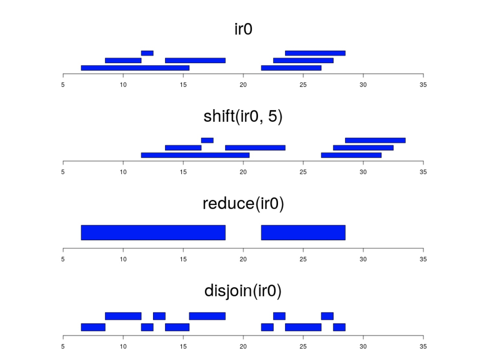

Learning Objectives
The GenomicRanges package defines general purpose containers, known as GRanges objects, for storing and manipulating genomic intervals and variables defined along a genome.
Load the GenomicRanges library and use the GRanges function to generate a sample of genomic intervals. The IRanges function creates numeric intervals which are passed to GRanges and understood as genomic co-ordinates:
library(GenomicRanges)
## Create a genomicRanges object from scratch
gr<-GRanges(seqnames=c("chr2","chr2","chr6","chr6","chr10"),
ranges=IRanges(start=c(100,150,300,350,500),
end=c(200,300,400,500,600)),
names=c(1,2,3,4,5))
gr## GRanges object with 5 ranges and 1 metadata column:
## seqnames ranges strand | names
## <Rle> <IRanges> <Rle> | <numeric>
## [1] chr2 100-200 * | 1
## [2] chr2 150-300 * | 2
## [3] chr6 300-400 * | 3
## [4] chr6 350-500 * | 4
## [5] chr10 500-600 * | 5
## -------
## seqinfo: 3 sequences from an unspecified genome; no seqlengthsWe can use the sample, rep and seq functions to generate co-ordinates. Try playing around with these functions.
## Create a second
gr2<-GRanges(seqnames = paste0("chr",seq(2,10,2)),
ranges = IRanges(start = sample(1000000,5) ,
width = rep(500,5)),strand = c(rep("+",3),rep("-",2)),names=seq(1,5))
gr2## GRanges object with 5 ranges and 1 metadata column:
## seqnames ranges strand | names
## <Rle> <IRanges> <Rle> | <integer>
## [1] chr2 457703-458202 + | 1
## [2] chr4 915226-915725 + | 2
## [3] chr6 743693-744192 + | 3
## [4] chr8 562671-563170 - | 4
## [5] chr10 166245-166744 - | 5
## -------
## seqinfo: 5 sequences from an unspecified genome; no seqlengthsWe can store several GRanges objects in a GRangeslist.
For instance, say we had two sets of candidate genes from two different, but related experiments. We can place these together in a list and apply the same operations on both sets at the same time.
## Create a GRanges list
gl<-GRangesList(gr,gr2)
gl## GRangesList object of length 2:
## [[1]]
## GRanges object with 5 ranges and 1 metadata column:
## seqnames ranges strand | names
## <Rle> <IRanges> <Rle> | <numeric>
## [1] chr2 100-200 * | 1
## [2] chr2 150-300 * | 2
## [3] chr6 300-400 * | 3
## [4] chr6 350-500 * | 4
## [5] chr10 500-600 * | 5
## -------
## seqinfo: 5 sequences from an unspecified genome; no seqlengths
##
## [[2]]
## GRanges object with 5 ranges and 1 metadata column:
## seqnames ranges strand | names
## <Rle> <IRanges> <Rle> | <numeric>
## [1] chr2 457703-458202 + | 1
## [2] chr4 915226-915725 + | 2
## [3] chr6 743693-744192 + | 3
## [4] chr8 562671-563170 - | 4
## [5] chr10 166245-166744 - | 5
## -------
## seqinfo: 5 sequences from an unspecified genome; no seqlengthsThe GRanges object has several accessor functions to quickly extract information about the data:
## Get the number of intervals in a GRanges object
length(gr)## [1] 5## Get the number of intervals in a GRanges object
length(gr)## [1] 5## Get the names of sequences (e.g. chromosomes) represented in the GRanges object
seqnames(gr)## factor-Rle of length 5 with 3 runs
## Lengths: 2 2 1
## Values : chr2 chr6 chr10
## Levels(3): chr2 chr6 chr10## Get the start and end positions or the strand
start(gr2)## [1] 457703 915226 743693 562671 166245end(gr2)## [1] 458202 915725 744192 563170 166744strand(gr2)## factor-Rle of length 5 with 2 runs
## Lengths: 3 2
## Values : + -
## Levels(3): + - *## Get the length of each genomic interval
width(gr)## [1] 101 151 101 151 101The GRanges object also contains metadata columns with additional information about each genomic interval. We can assign and retrieve metadata with the mcols function.
## Create a new metadata column to represent GC content
mcols(gr)$GC<-seq(1,0,length=length(gr))
## Fetch the metadata columns as a DataFrame
mcols(gr)## DataFrame with 5 rows and 2 columns
## names GC
## <numeric> <numeric>
## 1 1 1.00
## 2 2 0.75
## 3 3 0.50
## 4 4 0.25
## 5 5 0.00GRanges objects work like a lot of other vector objects in R. This means you can use many of the base R functions to subset, combine, sort and compare GRanges.
## Select specific GRanges
gr3<-gr[c(5,4,3)]
gr3## GRanges object with 3 ranges and 2 metadata columns:
## seqnames ranges strand | names GC
## <Rle> <IRanges> <Rle> | <numeric> <numeric>
## [1] chr10 500-600 * | 5 0.00
## [2] chr6 350-500 * | 4 0.25
## [3] chr6 300-400 * | 3 0.50
## -------
## seqinfo: 3 sequences from an unspecified genome; no seqlengths## Sort a Granges object
sort(gr3)## GRanges object with 3 ranges and 2 metadata columns:
## seqnames ranges strand | names GC
## <Rle> <IRanges> <Rle> | <numeric> <numeric>
## [1] chr6 300-400 * | 3 0.50
## [2] chr6 350-500 * | 4 0.25
## [3] chr10 500-600 * | 5 0.00
## -------
## seqinfo: 3 sequences from an unspecified genome; no seqlengths## Concatenate two GRanges
c(gr,gr2)## GRanges object with 10 ranges and 2 metadata columns:
## seqnames ranges strand | names GC
## <Rle> <IRanges> <Rle> | <numeric> <numeric>
## [1] chr2 100-200 * | 1 1.00
## [2] chr2 150-300 * | 2 0.75
## [3] chr6 300-400 * | 3 0.50
## [4] chr6 350-500 * | 4 0.25
## [5] chr10 500-600 * | 5 0.00
## [6] chr2 457703-458202 + | 1 NA
## [7] chr4 915226-915725 + | 2 NA
## [8] chr6 743693-744192 + | 3 NA
## [9] chr8 562671-563170 - | 4 NA
## [10] chr10 166245-166744 - | 5 NA
## -------
## seqinfo: 5 sequences from an unspecified genome; no seqlengths## Subset a GRanges object
subset(gr2,strand(gr2)=="-")## GRanges object with 2 ranges and 1 metadata column:
## seqnames ranges strand | names
## <Rle> <IRanges> <Rle> | <integer>
## [1] chr8 562671-563170 - | 4
## [2] chr10 166245-166744 - | 5
## -------
## seqinfo: 5 sequences from an unspecified genome; no seqlengths## Split GRanges into a GRangesList
split(gr,seqnames(gr))## GRangesList object of length 3:
## $chr2
## GRanges object with 2 ranges and 2 metadata columns:
## seqnames ranges strand | names GC
## <Rle> <IRanges> <Rle> | <numeric> <numeric>
## [1] chr2 100-200 * | 1 1.00
## [2] chr2 150-300 * | 2 0.75
## -------
## seqinfo: 3 sequences from an unspecified genome; no seqlengths
##
## $chr6
## GRanges object with 2 ranges and 2 metadata columns:
## seqnames ranges strand | names GC
## <Rle> <IRanges> <Rle> | <numeric> <numeric>
## [1] chr6 300-400 * | 3 0.50
## [2] chr6 350-500 * | 4 0.25
## -------
## seqinfo: 3 sequences from an unspecified genome; no seqlengths
##
## $chr10
## GRanges object with 1 range and 2 metadata columns:
## seqnames ranges strand | names GC
## <Rle> <IRanges> <Rle> | <numeric> <numeric>
## [1] chr10 500-600 * | 5 0
## -------
## seqinfo: 3 sequences from an unspecified genome; no seqlengthsChallenge:
1.Extract the GRanges in gr with >=0.5 GC content and split them into a list for each chromosome.
Solution:
gr_subset=subset(gr,mcols(gr)$GC>=0.5)
split(gr_subset,seqlevels(gr_subset))## GRangesList object of length 3:
## $chr10
## GRanges object with 1 range and 2 metadata columns:
## seqnames ranges strand | names GC
## <Rle> <IRanges> <Rle> | <numeric> <numeric>
## [1] chr6 300-400 * | 3 0.5
## -------
## seqinfo: 3 sequences from an unspecified genome; no seqlengths
##
## $chr2
## GRanges object with 1 range and 2 metadata columns:
## seqnames ranges strand | names GC
## <Rle> <IRanges> <Rle> | <numeric> <numeric>
## [1] chr2 100-200 * | 1 1
## -------
## seqinfo: 3 sequences from an unspecified genome; no seqlengths
##
## $chr6
## GRanges object with 1 range and 2 metadata columns:
## seqnames ranges strand | names GC
## <Rle> <IRanges> <Rle> | <numeric> <numeric>
## [1] chr2 150-300 * | 2 0.75
## -------
## seqinfo: 3 sequences from an unspecified genome; no seqlengths2.Concatenate the GRanges in gr and gr2 and extract the intervals on chr2.
Solution:
grc<-c(gr,gr2)
subset(grc,seqnames(grc)=="chr2")## GRanges object with 3 ranges and 2 metadata columns:
## seqnames ranges strand | names GC
## <Rle> <IRanges> <Rle> | <numeric> <numeric>
## [1] chr2 100-200 * | 1 1.00
## [2] chr2 150-300 * | 2 0.75
## [3] chr2 457703-458202 + | 1 NA
## -------
## seqinfo: 5 sequences from an unspecified genome; no seqlengths
The GenomicRanges package also has several useful functions to perform operations on GRanges objects based on the genomic intervals.
## Get the promoter region around the start of the feature
promoters(gr2,upstream = 1000,downstream=1000)## GRanges object with 5 ranges and 1 metadata column:
## seqnames ranges strand | names
## <Rle> <IRanges> <Rle> | <integer>
## [1] chr2 456703-458702 + | 1
## [2] chr4 914226-916225 + | 2
## [3] chr6 742693-744692 + | 3
## [4] chr8 562171-564170 - | 4
## [5] chr10 165745-167744 - | 5
## -------
## seqinfo: 5 sequences from an unspecified genome; no seqlengths## Reduce overlapping ranges into a single range
reduce(gr)## GRanges object with 3 ranges and 0 metadata columns:
## seqnames ranges strand
## <Rle> <IRanges> <Rle>
## [1] chr2 100-300 *
## [2] chr6 300-500 *
## [3] chr10 500-600 *
## -------
## seqinfo: 3 sequences from an unspecified genome; no seqlengths## Shift all the co-ordinates along
gr.shift<-shift(gr,100)
gr.shift## GRanges object with 5 ranges and 2 metadata columns:
## seqnames ranges strand | names GC
## <Rle> <IRanges> <Rle> | <numeric> <numeric>
## [1] chr2 200-300 * | 1 1.00
## [2] chr2 250-400 * | 2 0.75
## [3] chr6 400-500 * | 3 0.50
## [4] chr6 450-600 * | 4 0.25
## [5] chr10 600-700 * | 5 0.00
## -------
## seqinfo: 3 sequences from an unspecified genome; no seqlengths## Find the overlaps between 2 sets of GRanges
fo<-findOverlaps(query = gr,subject = gr.shift)
fo## Hits object with 7 hits and 0 metadata columns:
## queryHits subjectHits
## <integer> <integer>
## [1] 1 1
## [2] 2 1
## [3] 2 2
## [4] 3 3
## [5] 4 3
## [6] 4 4
## [7] 5 5
## -------
## queryLength: 5 / subjectLength: 5## Use the subjectHits or queryHits functions to extract columns from the output
subjectHits(fo)## [1] 1 1 2 3 3 4 5## Merge the regions between 2 sets of GRanges
union(gr.shift,gr)## GRanges object with 3 ranges and 0 metadata columns:
## seqnames ranges strand
## <Rle> <IRanges> <Rle>
## [1] chr2 100-400 *
## [2] chr6 300-600 *
## [3] chr10 500-700 *
## -------
## seqinfo: 3 sequences from an unspecified genome; no seqlengths## Get the overlapping regions between 2 sets of GRanges
intersect(gr.shift,gr)## GRanges object with 3 ranges and 0 metadata columns:
## seqnames ranges strand
## <Rle> <IRanges> <Rle>
## [1] chr2 200-300 *
## [2] chr6 400-500 *
## [3] chr10 600 *
## -------
## seqinfo: 3 sequences from an unspecified genome; no seqlengths## What happens if we set all the shifted ranges to the minus strand?
strand(gr.shift)="-"
intersect(gr.shift,gr)## GRanges object with 0 ranges and 0 metadata columns:
## seqnames ranges strand
## <Rle> <IRanges> <Rle>
## -------
## seqinfo: 3 sequences from an unspecified genome; no seqlengths## Strandedness is used in comparisons by default but we can turn this off:
intersect(gr.shift,gr,ignore.strand=T)## GRanges object with 3 ranges and 0 metadata columns:
## seqnames ranges strand
## <Rle> <IRanges> <Rle>
## [1] chr2 200-300 *
## [2] chr6 400-500 *
## [3] chr10 600 *
## -------
## seqinfo: 3 sequences from an unspecified genome; no seqlengthsWe can also perform operations on all of the GRanges in a GRangesList object:
## We can perform operations on all items in the list
promoters(gl)## GRangesList object of length 2:
## [[1]]
## GRanges object with 5 ranges and 1 metadata column:
## seqnames ranges strand | names
## <Rle> <IRanges> <Rle> | <numeric>
## [1] chr2 -1900-299 * | 1
## [2] chr2 -1850-349 * | 2
## [3] chr6 -1700-499 * | 3
## [4] chr6 -1650-549 * | 4
## [5] chr10 -1500-699 * | 5
## -------
## seqinfo: 5 sequences from an unspecified genome; no seqlengths
##
## [[2]]
## GRanges object with 5 ranges and 1 metadata column:
## seqnames ranges strand | names
## <Rle> <IRanges> <Rle> | <numeric>
## [1] chr2 455703-457902 + | 1
## [2] chr4 913226-915425 + | 2
## [3] chr6 741693-743892 + | 3
## [4] chr8 562971-565170 - | 4
## [5] chr10 166545-168744 - | 5
## -------
## seqinfo: 5 sequences from an unspecified genome; no seqlengthsGRangesList objects also work with base R list functions like lapply and unlist but we will not cover that here.
Challenge:
1.There are many more functions in the Genomic Ranges documentation as well as the How To document.
Read the documentation and see if you can figure out how to get the 1000 bases downstream of each of the ranges in gr2.
Solution:
flank(gr2,1000,start=F)## GRanges object with 5 ranges and 1 metadata column:
## seqnames ranges strand | names
## <Rle> <IRanges> <Rle> | <integer>
## [1] chr2 458203-459202 + | 1
## [2] chr4 915726-916725 + | 2
## [3] chr6 744193-745192 + | 3
## [4] chr8 561671-562670 - | 4
## [5] chr10 165245-166244 - | 5
## -------
## seqinfo: 5 sequences from an unspecified genome; no seqlengths2.Create a new GRanges object called genes and find which genes overlap with the ranges in gr2.
genes<-GRanges(seqnames=c("chr2","chr6","chr9"),ranges = IRanges(start=c(623900,791900,881110),width=100),strand="+",name=c("geneA","geneB","geneC"))Solution:
overlaps<-findOverlaps(query = genes,subject=gr2)
qh<-queryHits(overlaps)
qh<-unique(qh) ## Not necessary here, but will prevent repeats if genes overlapped with more than one region
genes[qh]$name## character(0)Note that it is also possible to string together GRanges operations with R pipes e.g.
library(magrittr)
qh<-findOverlaps(query = genes,subject=gr2) %>% queryHits() %>% unique()
genes[qh]$name## character(0)The genomation package has several useful functions to import annotation and sequencing files into R as GRanges objects.
We are going to work with annotation files from the Human hg19 reference genome. The file Ensembl.GRCh37.74.edited.genes.strict.bed contains gene annotations downloaded from the Ensembl database in bed format.
Load the genomation library and use the readBed function to read in the file. You can download the file from the link above and save it in your working directory. Or, you can read directly from the URL.
library(genomation)
## Read in a bed file if it exists on your computer
#hg19.genes<-readBed("Ensembl.GRCh37.74.edited.genes.strict.bed")
## Read in a bed file from the web
hg19.genes<-readBed("http://bifx-core.bio.ed.ac.uk/genomes/human/hg19/annotation/Ensembl.GRCh37.74.edited.genes.strict.bed")
## Inspect the object
hg19.genes## GRanges object with 57773 ranges and 2 metadata columns:
## seqnames ranges strand | score name
## <Rle> <IRanges> <Rle> | <integer> <character>
## [1] chr13 23551995-23552136 - | 0 ENSG00000223116
## [2] chr13 23708314-23708703 + | 0 ENSG00000233440
## [3] chr13 23726726-23726825 - | 0 ENSG00000207157
## [4] chr13 23743975-23744736 - | 0 ENSG00000229483
## [5] chr13 23791572-23791673 - | 0 ENSG00000252952
## ... ... ... ... . ... ...
## [57769] chr3 14313874-14345345 - | 0 ENSG00000255021
## [57770] chr3 14389952-14394068 - | 0 ENSG00000251576
## [57771] chr3 14436149-14436257 + | 0 ENSG00000199609
## [57772] chr3 14530620-14583588 - | 0 ENSG00000144596
## [57773] chr2 61704985-61765761 - | 0 ENSG00000082898
## -------
## seqinfo: 25 sequences from an unspecified genome; no seqlengthsNote that the GRanges object has a “slot” for seqinfo which can store the lengths of each chromosome and the genome they are derived from. Some functions make use of seqinfo, for instance when calculating the gaps in coverage of a GRanges object we need to know where the end of each chromosome is. This information is currently empty but we will see how to update it later.
seqinfo(hg19.genes)## Seqinfo object with 25 sequences from an unspecified genome; no seqlengths:
## seqnames seqlengths isCircular genome
## chr1 <NA> <NA> <NA>
## chr2 <NA> <NA> <NA>
## chr3 <NA> <NA> <NA>
## chr4 <NA> <NA> <NA>
## chr5 <NA> <NA> <NA>
## ... ... ... ...
## chr21 <NA> <NA> <NA>
## chr22 <NA> <NA> <NA>
## chrX <NA> <NA> <NA>
## chrY <NA> <NA> <NA>
## chrM <NA> <NA> <NA>We can also use genomation to read in files that are not in a standard format using the readGeneric function. Let’s update our hg19.genes object by reading a file with more information (metadata) about each gene.
This file contains the same gene annotations along with additional columns of information. The file is not in the strict bed format so we need to use the readGeneric function.
The meta.cols argument allows us to specify the column numbers to be read as metadata and how to name these.
## This file contains the same gene annotations but has some extra columns in the table which we can also import.
hg19.genes<-readGeneric("http://bifx-core.bio.ed.ac.uk/genomes/human/hg19/annotation/Ensembl.GRCh37.74.edited.genes.bed",chr = 1,start = 2,end = 3,strand = 6,meta.cols = list(name=4,symbol=5,biotype=7))
## The meta.cols parameter is a list of metadata column numbers and the names we want to give them.
hg19.genes## GRanges object with 57773 ranges and 3 metadata columns:
## seqnames ranges strand | name symbol
## <Rle> <IRanges> <Rle> | <character> <character>
## [1] chr13 23551994-23552136 - | ENSG00000223116 AL157931.1
## [2] chr13 23708313-23708703 + | ENSG00000233440 HMGA1P6
## [3] chr13 23726725-23726825 - | ENSG00000207157 RNY3P4
## [4] chr13 23743974-23744736 - | ENSG00000229483 LINC00362
## [5] chr13 23791571-23791673 - | ENSG00000252952 RNU6-58P
## ... ... ... ... . ... ...
## [57769] chr3 14313873-14345345 - | ENSG00000255021 RP11-536I6.2
## [57770] chr3 14389951-14394068 - | ENSG00000251576 RP11-536I6.1
## [57771] chr3 14436148-14436257 + | ENSG00000199609 RNA5SP124
## [57772] chr3 14530619-14583588 - | ENSG00000144596 GRIP2
## [57773] chr2 61704984-61765761 - | ENSG00000082898 XPO1
## biotype
## <character>
## [1] miRNA
## [2] pseudogene
## [3] misc_RNA
## [4] lincRNA
## [5] snRNA
## ... ...
## [57769] lincRNA
## [57770] lincRNA
## [57771] rRNA
## [57772] processed_transcript
## [57773] protein_coding
## -------
## seqinfo: 25 sequences from an unspecified genome; no seqlengthsWe can use the metadata to filter our GRanges object using the subset function.
##Get all protein coding genes
hg19.pc.genes<-subset(hg19.genes,hg19.genes$biotype=="protein_coding")
hg19.pc.genes## GRanges object with 20327 ranges and 3 metadata columns:
## seqnames ranges strand | name symbol
## <Rle> <IRanges> <Rle> | <character> <character>
## [1] chr15 20737094-20747114 - | ENSG00000215405 GOLGA6L6
## [2] chr15 21004687-21005367 + | ENSG00000268343 AC012414.1
## [3] chr15 21040701-21071643 - | ENSG00000230031 POTEB2
## [4] chr15 49280673-49338760 - | ENSG00000138593 SECISBP2L
## [5] chr15 22011370-22012050 + | ENSG00000268531 DKFZP547L112
## ... ... ... ... . ... ...
## [20323] chr17 43224684-43229468 + | ENSG00000186834 HEXIM1
## [20324] chr17 43238067-43247407 + | ENSG00000168517 HEXIM2
## [20325] chr17 43298811-43324687 + | ENSG00000184922 FMNL1
## [20326] chr10 22823778-23003484 - | ENSG00000150867 PIP4K2A
## [20327] chr2 61704984-61765761 - | ENSG00000082898 XPO1
## biotype
## <character>
## [1] protein_coding
## [2] protein_coding
## [3] protein_coding
## [4] protein_coding
## [5] protein_coding
## ... ...
## [20323] protein_coding
## [20324] protein_coding
## [20325] protein_coding
## [20326] protein_coding
## [20327] protein_coding
## -------
## seqinfo: 25 sequences from an unspecified genome; no seqlengthsFurther Learning
There are several other import functions in genomation:
genomation also has several analysis functions:
Take a look at the genomation manual and documentation to learn more.
Key points